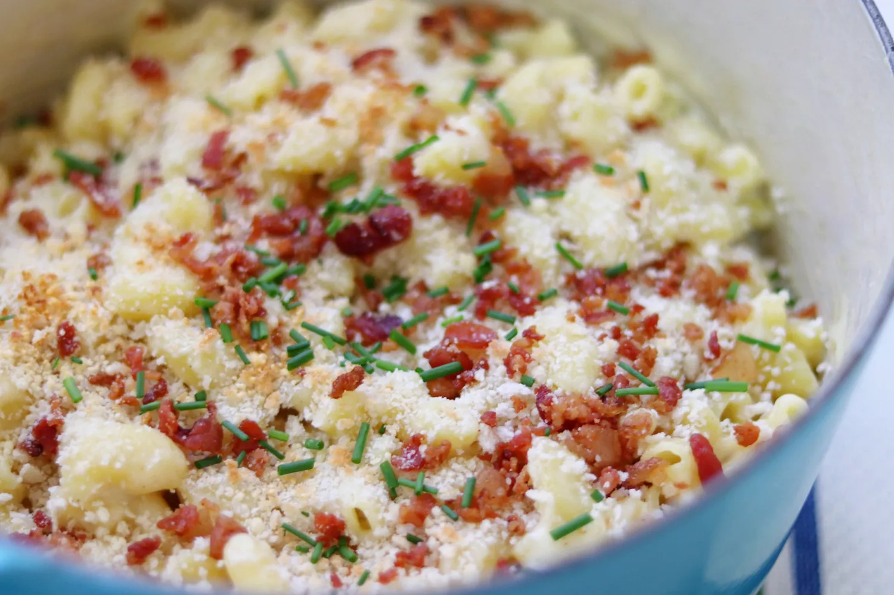

Mac'n cheese

Description
If you enjoy a good steak on the barbecue, good for you! For now, let's make a good ol' mac'n cheese recipe.
Ingredients
- elbow macaroni
- milk
- salt and pepper
- bread crumbs
- bacon
- chives
- cheese
- more cheese
Steps
- Bring macaroni, water, milk and salt to a boil. Reduce heat to simmer stir until the pasta are cook. 7-10 minutes
- Remove pot from heat. Add pepper, some butter and 3/4 of the cheese
- Heat the oven
- Top the pasta with bread crumbs the remainder of the cheese and the bacon
- Put that shit in the oven to broil. Wait 3 minutes, top with chives and eat immediately.